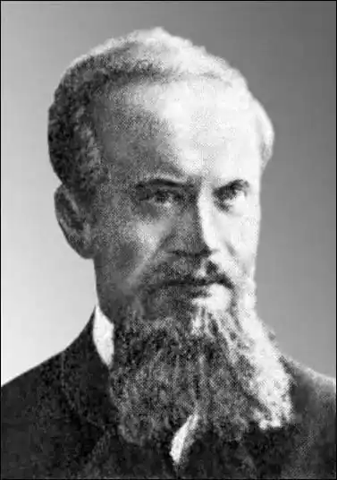

Перша ширша стаття про його життя і творчість пера Романа Кирчева появилася в уескатівському "Українському календарі" за 1973 р. Багатший аналіз його літературної творчості провів та уточнив деякі дати з його життя Євген Нахлік у статті "Вразлива душа, упоєна поетичним жалем" ("Україна", 1989, № 49). Там же поміщено оповідання О. Авдиковича, написане в стилі його "символістської поезії у прозі" п.з. "Відголоски". Врешті, солідна стаття цього ж автора про перемиського педагога і літератора була поміщена у збірнику доповідей на першій науковій конференції "Перемишль і Перемиська земля протягом століть" (т. І, 1992 р., с. 233–248).
О. Авдикович походив зі священичої сім’ї, народився 16 лютого 1877 р. в селі Сороках на Тернопільщині. Після закінчення єдиної тоді в Галичині української гімназії у Львові, проти волі батьків, як і проти своїх зацікавлень, став студентом Гірничої академії в Леобені. Але його більше притягала гуманістика, тому він покинув Леобен і записався на філософський факультет Львівського університету. Після закінчення цього вишу переїхав до Перемишля, де почав учителювати спочатку в польській гімназії, а з 1903 р. в українській під дирекцією Г. Цеглинського, а також у дівочому ліцеї. Проявив себе як талановитий вихователь молодого покоління і дуже скоро авансував з заступника вчителя на дійсного вчителя (1907 р.) та ц.к. (цісарсько-королівського – ред.) професора (1909 р.). Навчав руської (української) мови, а теж латинської та грецької мов, крім того, був опікуном учнівської бібліотеки і керував літературною секцією молоді, допомагаючи їй готувати доповіді на засідання цієї секції. Від грудня 1911 р. став ще й куратором драматичної секції, під його опікою молоді учасники поставили вже в січні наступного року драму Івана Франка "Учитель".
О. Авдикович не відмовлявся і від громадської діяльності поза школою, деякий час очолював місцеве Товариство лекцій ім. Петра Могили, яке кожного тижня, а навіть частіше, улаштовувало наукові та популярно-наукові доповіді місцевих і запрошених ззовні доповідачів. Сам він також читав доповіді з української літератури, на які приходили переважно перемиські гімназисти. Інколи їх навідувалося біля сотні, а то й більше. Чимало часу О. Авдикович присвячував письменницькій та науково-літературній діяльності. Вже під кінець 90-х рр. під впливом Осипа Маковея (тоді редактора "Буковини", а потім співредактора "Літературно-наукового вісника") почав писати оповідання. Вони друкувалися спочатку в "Ділі" (1898 р.), "Руслані" (1899 р.) і, врешті, у "Літературно-науковому віснику" (1900 р., "ЛНВ"). Невдовзі появлялися також окремими збірками, серед яких "Поезія і проза" та "Нарис одної доби" (1899 р.), "Метелики" і "Нетлі" (1900 р.), "Демон руїни" (1901 р.). Уже в перших оповіданнях О. Авдиковича проявляються декадентські настрої, вельми популярні серед галицької молоді, та не лише української, але й польської. Саме тоді (1898–1901 рр.) у Кракові розвивав і популяризував свою творчість овіяний славою, визнаний письменник Станіслав Пшибишевський, наділений багатою уявою та пишномовним стилем, але і прикметами скандального декадента, сатаніста й інших приписуваних йому характеристик. На перші прояви творчого таланту Ореста Авдиковича та інших двох галицьких письменників – Антона Крушельницького і Євгена Мандичевського – звернув увагу Іван Франко, пишучи: "Усі три новелісти виявили неабиякі здібності, але у всіх трьох, крім добрих речей, трапляються праці ще зовсім незрілі: їхнє літературне обличчя ще не розвинулось так, щоб можна було про них скласти остаточну думку". Найкращі оповідання О. Авдиковича поміщені у збірці "Моя популярність та інші оповідання" (1905 р.), яку підготовив до друку і видав Володимир Гнатюк. Він же в газеті "Діло", а потім у "ЛНВ" писав про це видання: "…оповідання зібрані в оцій книжці вказують на єго белетристичний талант та що той талант починає дозрівати, заокруглювати і конденсуватися. Легкий гумор, делікатна сатира, деяка алегоричність – отсе ціхи найновішої єго збірки. Через усе те збірку належить зачислити до добрих набутків нашої літератури". У серпні 1914 р. вибухла І Світова війна і своєрідним відгуком (за словами Є. Нагліка) на цю подію була написана О. Авдиковичем "містерія на Різдво 1914" під заголовком "Ой у рідному краю та на Дикому полі", присвячена гуцульським Січовим стрільцям (опублікована 1918 р.). У той час О. Авдикович передав А. Крушельницькому збірку 13 оповідань до друку, але у воєнній хуртовині вони десь пропали. Одне з тих оповідань "На згарищах" було пізніше опубліковане в "Нових шляхах" (1929 р., т. 2, № 4). Його темою є доля (радше недоля) селянина з околиць Перемишля, якого село спалили і він, гнаний воєнними діями різних армій, пробує влаштувати собі життя у власноруч викопаній землянці. З літературознавчих праць О. Авдиковича збереглися дві солідні розвідки, опубліковані у "Звітах" Перемиської гімназії: "Критичний розбір щоважніших оповідань Ол. Кониського" (1907/8 рр.) та "Форма писань Маркіяна Шашкевича" (1911/12 рр.). У підсумку творчості М. Шашкевича автор пише, що його творчість "не виходила поза сферу інстинктовного змагання до обнови національних почувань" та все-таки, за словами О. Авдиковича, він став "першим сівачем живого слова українського і піоніром національної свідомості". Натомість у цілком інших обставинах писав і діяв О. Кониський. Бачачи скрізь в Україні темноту і ренегатство, він уважав себе вчителем-діячем на полі освіти і національного виховання нетямущих та байдужих. Завершував цю статтю перемиський вчитель професор словами О. Кониського: "Гаряча любов до рідного краю і народу гріє та духотворить і не дає чоловікови валятися гнилою колодою". На 40-му році життя О. Авдикович тяжко захворів на запалення спинного мозку і вже 1917/18 навчального року одержав відпустку на лікування у Відні, де він і помер 28.10.1918 р. Був похований на Центральному цвинтарі в Перемишлі, але слід його поховання вже давно замели ті, хто й сьогодні закликає позбутися українців "живих і мертвих". Степан Заброварний